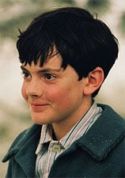
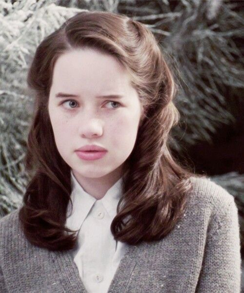
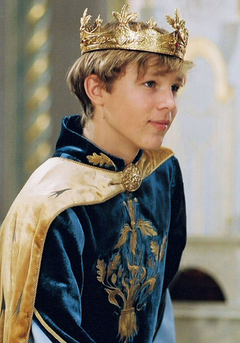

Lucy va néixer a Finchley, un barri del Gran Londres, Anglaterra, el 1932, i té 8 anys quan apareix a The Lion, the Witch and the Wardrobe. A L'última batalla ella té 17 anys.
Lucy Pevensie és un personatge de ficció en CS Lewis 's les cròniques de Narnia sèrie. Ella és la menor dels quatre fills de Pevensie, i la primera a trobar l'entrada de l'armari Narnia en el lleó, la bruixa i el rober. De tots els nens Pevensie, Lucy és la més propera a Aslan. A més, de tots els humans que han visitat Narnia, Lucy és potser la que més creu en Narnia. Ella finalment és coronada Reina Lucía la Valent, co-governant de Narnia juntament amb els seus dos germans i la seva germana. Lucy és el personatge central dels quatre germans de les novel·les.
Lucy és interpretada per Georgie Henley en la pel·lícula de 2005 Les cròniques de Narnia: el lleó, la bruixa i l'armari i va tornar a repetir el seu paper en la pel·lícula de 2008 Les cròniques de Narnia: el príncep Caspian. La germana gran de Georgie, Rachael Henley, interpreta la reina Lucy gran a la fi de la primera pel·lícula. Georgie Henley també va repetir el seu paper en la pel·lícula de 2010. Les cròniques de Narnia: El viatge de l'viatger de l'alba, que és la tercera de la sèrie de pel·lícules.
El personatge de Lucy Pevensie es va inspirar al juny Flewett, una devota catòlica noia londinenca evacuat per la seva convent a Els forns, Luis'casa de camp el 1942, i el nom de la fillola de Lewis Lucy Barfield , a qui va dedicar el lleó, la bruixa i el armari. Lucy és descrita en el llibre com rossa: "Però pel que fa a Lucy, ella sempre va ser alegre i de cabell daurat, i tots els prínceps a aquestes parts desitjaven que fos la seva Reina, i la seva gent la cridava Reina Lucy la Valent."
Lucy era la més fidel de les quatre i la més propera a Aslan, i mai va deixar de creure en Narnia. Ella i els seus germans Peter i Edmund, després de morir en un accident de tren a Anglaterra, van ser transportats a País d'Aslan amb els altres narnianos.
Edmund Pevensie
Edmund va néixer a Finchley, un barri del Gran Londres, Anglaterra. Quan apareix a El lleó, la bruixa i el rober té 10 anys ia L'última batalla té 19 anys. És un excel·lent espadatxí, ia més és apreciat pels seus savis consells i justes decisions. És conegut com Rei Edmund, El Just.
Edmund Pevensie és un personatge de ficció de l'obra Les Cròniques de Narnia, de l'escriptor C.S. Lewis. És coprotagonista de la saga juntament amb els seus tres germans: Peter, Susan i Lucy. Participa a El lleó, la bruixa i el rober, El príncep Caspian, La travessia del Viatger de l'Alba, El cavall i el noi, i L'última batalla.
Al principi de la saga aquest germà es fa veure com un traïdor, assemblant-se a Judes Iscariot, però amb el passar dels anys es demostra com una persona sàvia i solemne, semblant al personatge bíblic de Salomó.
A les adaptacions al cinema realitzades per Walt Disney Pictures (Les cròniques de Narnia: el lleó, la bruixa i el rober i Les cròniques de Narnia: el príncep Caspian) i 20th Century Fox (Les cròniques de Narnia: la travessia del Viatger de l'Alba ), Edmund és encarnat per l'actor Skandar Keynes com a nen, i com a adult és interpretat per Mark Wells.
Aquest llibre explica que Edmund va començar la seva participació com una persona amable, però després va anar a pitjor. Va començar a actuar malament després d'assistir a una nova escola (encara que el 2005, l'adaptació cinematogràfica del llibre explica que ell està disgustat perquè el seu pare es va veure obligat a servir a la guerra, i que són enviats lluny de casa seva com a resultat).

Susan Pevensie
Susan va néixer a Finchley, un barri del Gran Londres, Anglaterra, el 1928, i té 12 anys quan apareix a El lleó, la bruixa i el rober. A L'última batalla ja té 21 anys. Ella es caracteritza per ser una magnífica arquera, la millor de Narnia. Es nomena al llibre que és molt bonica, la més bella de la família.
Susan Pevensie és un important personatge de ficció a la sèrie de Les Cròniques de Narnia, creada per C. S. Lewis. Susan és segona germana després de Peter. Ella apareix en tres llibres: A El lleó, la bruixa i el rober i El príncep Caspian apareix quan era nena, ia El cavall i el noi apareix ja com a adulta. És esmentada a La travessia del Viatger de l'Alba i L'última batalla. En el seu estadía a Narnia, és coneguda com la Reina Susan, la Benévola. Ella va ser l'única dels germans Pevensie que no va tornar a Narnia per als fets succeïts a l'últim llibre.
Com la segona gran dels quatre germans Pevensie, així com la nena gran, Susan s'inclinava a ser maternal, pràctica i cautelosa. Per tant, només creia a Narnia quan va entrar, i fins i tot aleshores, en comparació amb Lucy i Peter, semblava poc aventurera a causa de les seves preocupacions sobre la malvada Bruixa Blanca i el fred hivern. Més tard, igual que Lucy, va desenvolupar una connexió especial amb Aslan.
En les pel·lícules de Walt Disney Pictures i Walden Media (Les cròniques de Narnia: el lleó, la bruixa i el rober i Les cròniques de Narnia: el príncep Caspian) és interpretada per Anna Popplewell, i com a adulta és interpretada per Sophie Winkleman.

Peter Pevensie
D'acord amb la cronologia de les Cròniques de Narnia establerta per C.S. Lewis, Peter va néixer el 1927, a Finchley, un barri del Gran Londres, Anglaterra, i té 13 anys quan comença la seva aventura a El lleó, la bruixa i el rober. Com a monarca de l'Edat d'Or de Narnia, va regnar durant 15 anys juntament amb els seus germans, aconseguint l'edat de 28 anys aproximadament, abans de tornar a Anglaterra i recobrar la mateixa edat que tenia al començament de l'aventura. Torna a Narnia a El príncep Caspian quan té 14 anys, ia L'última batalla apareix amb 22 anys.
Peter Pevensie és un dels personatges principals de Les Cròniques de Narnia, sèrie de novel·les fantàstiques per a nens escrita per C. S. Lewis. A El lleó, la bruixa i l'armari i El príncep Caspian, és un dels nens que viatgen a Narnia, mentre que a La última batalla apareix com a adult. Se l'esmenta a La travessia del Viatger de l'Alba ia El cavall i el noi.
Peter és el més gran dels quatre germans Pevensie i comparteix les seves aventures a Narnia. Com el Summe Monarca, Peter té autoritat sobre tots els altres reis i reines que el país sempre tindrà. Peter és conegut com Peter el Magnífic, Temor dels Llops.
En les adaptacions al cinema realitzades per Walt Disney Pictures i Walden Media (Les cròniques de Narnia: el lleó, la bruixa i l'armari i Les cròniques de Narnia: el príncep Caspian), Peter és interpretat com a nen per l'actor anglès William Moseley i com a adult, per Noah Huntley.

Aslan
Aslan, "El Gran León", és el personatge principal de Les Cròniques de Narnia. Aslan és el creador de Narnia i fill del gran emperador d'Allende els mars. El seu paper a Narnia es desenvolupa al llarg de tota la sèrie, sent l'únic personatge a aparèixer a tots els llibres.
És un lleó parlant, rei de les bèsties, fill de l'Emperador dels mars del Més Enllà, un savi, compassiu, una autoritat màgica (tant temporal i espiritual); misteriós, i és l'estimat guia per als nens humans que el visiten; guardià i salvador de Narnia i, en darrera instància, creador i destructor d'aquest món màgic.
Durant la sèrie, es comenta que Aslan no és un lleó domat, té un gran poder i pot arribar a ser perillós.
Segons el mateix C. S. Lewis, Aslan, que en turc significa "Lleó", és descrit com una versió alternativa de Crist. L'autor britànic va sentir el nom per primera vegada en un viatge a l'Imperi Otomà (actual Turquia), on va quedar impressionat amb l'elit de guàrdies del Sultà, també anomenat Aslan a causa de la seva valentia i lleialtat. A les novel·les de Narnia, té una infinitat de súbdits en què s'inclouen bèsties parlants, centaures, faunes, nans, unicorns i aixetes, entre d'altres.
A la pel·lícula de Walt Disney Pictures i Walden Media, El lleó, la bruixa i l'armari i El príncep Caspian, la veu d'Aslan és interpretada per Liam Neeson.